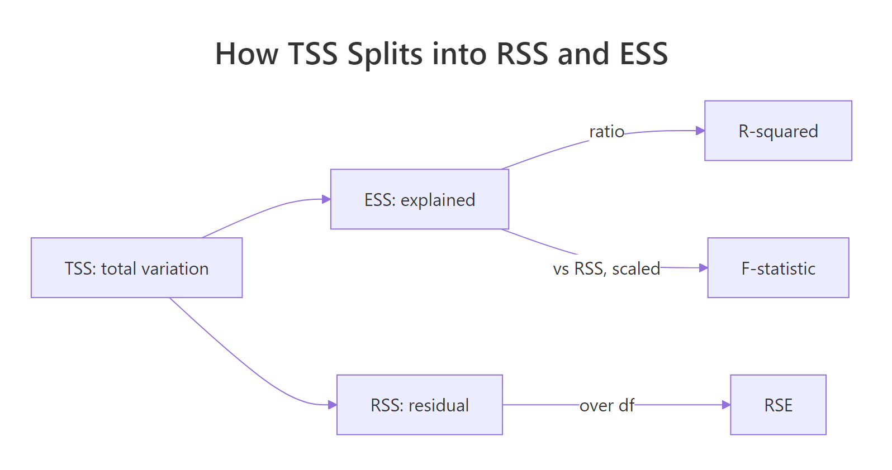
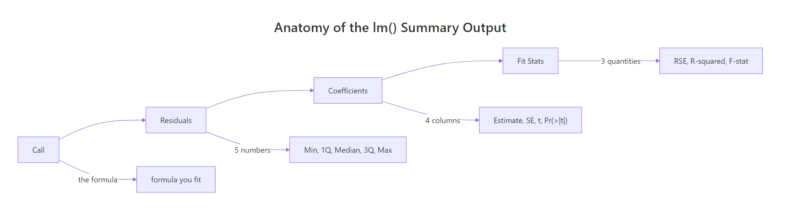

Interpreting Regression Output Completely: Every Number in lm Summary
R's summary() of an lm object prints four blocks of numbers: the formula, a residual distribution, a coefficient table, and model-fit statistics. This page decodes every single number, including how each one is computed, so you never again wonder what Pr(>|t|) or F-statistic: 69.21 actually means.
What does each section of the lm() summary mean?
When you run summary(fit) on a linear model, R prints a wall of numbers in seconds. Most articles translate each label in isolation, which leaves you with a glossary but no mental model. Instead, let's fit one model on mtcars, print the full summary once, and use that output as the reference we decode, number by number, through the rest of the page.
That one object holds 18 numbers across four blocks. The Call echoes your formula so you can confirm what was fit. Residuals summarise how far off each prediction is. Coefficients give you the fitted slopes with uncertainty and significance. Fit statistics tell you how well the model explains the variance in mpg overall. Every number we discuss below appears in this output.
Try it: Fit a simpler one-predictor model lm(mpg ~ wt, mtcars) and print its summary. Notice which block shrinks.
Click to reveal solution
Explanation: Dropping hp removes one row from the coefficient table. The Residuals, RSE, R-squared and F lines still print, they always exist for any valid lm.
How do you read the residuals distribution?
A residual is the difference between the actual response value and the model's prediction: $e_i = y_i - \hat{y}_i$. R prints a five-number summary of these residuals at the top of the output. That summary is your first, cheapest diagnostic: look at it before you stare at coefficients.
The five numbers (min, 1Q, median, 3Q, max) describe the distribution of prediction errors in the units of the response (miles per gallon here). Two sanity checks: the median should sit near zero (our -0.18 is fine), and the tails should be roughly balanced (here -3.94 vs 5.85, a little right-skew, worth noting). A wildly off-centre median or badly lopsided tails hints at model misspecification.
Try it: Verify the residuals definition by computing them from scratch as y - fitted(fit) and confirming they equal residuals(fit).
Click to reveal solution
Explanation: Residuals are defined as observed minus fitted. residuals(fit) is just a convenience accessor for this subtraction.
What does each coefficient column tell you?
The coefficients table is the heart of the summary. It has four columns, one row per predictor (plus the intercept). Let's extract it and walk through the meaning of each column for the wt row.
Reading the wt row:
- Estimate (
-3.878). The fitted slope. Holdinghpconstant, each extra 1,000 lb of weight is associated with a drop of 3.88 mpg. Its sign and magnitude are the business story. - Std. Error (
0.633). The standard deviation of the estimate's sampling distribution. It tells you how precisely the slope is pinned down. Roughly, a 95% confidence interval is Estimate ± 2 × SE, sowtis between about -5.14 and -2.61 mpg per 1,000 lb. - t value (
-6.13). Estimate divided by Std. Error, that is, how many standard errors the estimate sits from zero. Large absolute values mean the predictor's effect clearly stands out from noise. - Pr(>|t|) (
1.12e-06). The two-sided p-value from a t-distribution with $n - k - 1$ degrees of freedom (here $32 - 2 - 1 = 29$). Tiny p-values mean the slope is unlikely to be zero by chance alone. - Significance codes. The stars are a visual shortcut:
*for p < 0.001,for p < 0.01,*for p < 0.05,.for p < 0.1, blank otherwise.
Let's verify by computing the t-value and p-value for wt from scratch.
Both numbers match the printed summary to the last decimal. The p-value is 2 * pt(|t|, df, lower.tail = FALSE) because it's two-sided: we ask "how likely is a t-statistic at least this far from zero in either direction, if the true slope were really 0?" The answer, one in a million, is the p-value.
Try it: Reproduce the t-value and p-value for the hp row. (Expected: t ≈ -3.519, p ≈ 0.00145.)
Click to reveal solution
Explanation: The same formula works for any predictor in the table. The only things that change are the Estimate and Std. Error for that row.
What is the Residual Standard Error and how is it computed?
The Residual standard error: 2.593 on 29 degrees of freedom line condenses the residual distribution into one number with a precise meaning. RSE is the estimated standard deviation of the errors, roughly the typical distance between a prediction and the truth in the response variable's units.
The formula is:
$$\text{RSE} = \sqrt{\frac{\text{RSS}}{n - k - 1}}$$
Where:
- RSS is the residual sum of squares, $\sum_i e_i^2$
- $n$ is the number of observations
- $k$ is the number of predictors (excluding the intercept)
- $n - k - 1$ is the residual degrees of freedom
Let's build it from the residuals.
Our rse_manual exactly matches sigma(fit), which is R's built-in accessor for the same number. The interpretation: given this model, a typical prediction for mpg misses by about 2.6 mpg. Units matter: RSE is always in the response variable's units, which makes it practically meaningful. A smaller RSE, for the same response, means a tighter fit.
y. If sd(mtcars$mpg) = 6.03 and our RSE is 2.59, the model reduced the typical prediction error from 6.03 (using only the mean) to 2.59 (using wt and hp). That shrinkage is the model's value, expressed in one number.Try it: Fit lm(Sepal.Length ~ Petal.Length, iris), compute its RSE from first principles, and confirm it matches sigma(fit).
Click to reveal solution
Explanation: Same formula, different model. The residual degrees of freedom are $150 - 1 - 1 = 148$ here.
How do Multiple and Adjusted R-squared differ?
R-squared answers a single question: what fraction of the variance in y does our model explain? The total variance of y (TSS) is split into explained variance (ESS) and residual variance (RSS), and R² is simply the explained share.

Figure 1: Total sum of squares (TSS) splits into explained (ESS) and residual (RSS) parts. R-squared is ESS/TSS. RSE and F-statistic reuse the same building blocks.
Formally:
$$R^2 = 1 - \frac{\text{RSS}}{\text{TSS}}, \qquad \text{TSS} = \sum_i (y_i - \bar{y})^2$$
Adjusted R² tweaks this to penalise adding predictors just to inflate R². Its formula is:
$$R^2_{\text{adj}} = 1 - \frac{\text{RSS} / (n - k - 1)}{\text{TSS} / (n - 1)}$$
Where the numerator is the residual variance (RSE²) and the denominator is the sample variance of y. Adding a useless predictor barely shrinks RSS but always costs you one degree of freedom, so $R^2_{\text{adj}}$ goes down unless the predictor pulls real weight.
Multiple R² says wt and hp together explain about 82.7% of the variance in mpg. The Adjusted R² shaves that down to 81.5% because we spent two predictors' worth of degrees of freedom to get there. The gap between the two numbers is small here because both predictors genuinely help.
Try it: Add a random noise column to mtcars, refit mpg ~ wt + hp + noise, and see what happens to r.squared vs adj.r.squared.
Click to reveal solution
Explanation: Multiple R² ticked up from 0.8268 to 0.8272 (useless noise still trims RSS by a hair). Adjusted R² fell from 0.8148 to 0.8088. The adjusted metric correctly exposes the waste.
What does the F-statistic test?
While each t-value asks "is this one slope zero?", the F-statistic asks the global question: is any slope non-zero? Formally, it tests the null hypothesis $H_0: \beta_1 = \beta_2 = \dots = \beta_k = 0$ against the alternative that at least one coefficient is non-zero.
The formula is a ratio of explained variance per predictor to residual variance per degree of freedom:
$$F = \frac{\text{ESS} / k}{\text{RSS} / (n - k - 1)}$$
Where ESS = TSS − RSS is the explained sum of squares. Under the null, this ratio follows an F-distribution with $k$ and $n - k - 1$ degrees of freedom. A big F means the model explains a lot relative to the noise.
That matches the printed F-statistic: 69.21 on 2 and 29 DF, p-value: 9.109e-12. An F of 69 with a p-value near 10⁻¹¹ is about as far from "no effect anywhere" as you can get, this model reliably explains mpg.
Try it: For a simple one-predictor regression, show that $F = t^2$.
Click to reveal solution
Explanation: With one predictor, the global test is the same as the slope-is-zero test. Algebraically, an F-statistic with 1 numerator degree of freedom equals the square of a t-statistic with the same denominator df.
How do you extract these numbers programmatically with broom?
summary() is designed for humans. When you need these numbers inside a pipeline (a report, a loop, a comparison table), the broom package turns the summary into tidy data frames.
Every number we decoded in the earlier sections has a named column here: tidy() returns the coefficient table as rows, glance() returns the one-line fit summary. That makes it trivial to compare models side by side, for example bind_rows(glance(fit_a), glance(fit_b)).
broom::glance() when comparing models. One row per model means you can stack fits from different formulas, datasets, or subsets into a single data frame, sort by adj.r.squared or AIC, and pick the winner with arrange(). It scales from two models to two hundred.Try it: Pull the Adjusted R² and F-statistic p-value out of glance(fit) into a named numeric vector.
Click to reveal solution
Explanation: glance() returns a one-row tibble, so plain $ indexing grabs the scalar values you want, no list-digging required.
Practice Exercises
Exercise 1: Decode a new model's summary end-to-end
Fit lm(Sepal.Length ~ Sepal.Width + Petal.Length, iris). From its summary, report: (a) the median residual, (b) the t-value for Sepal.Width, (c) the Residual Standard Error, (d) Adjusted R-squared, and (e) the overall F-statistic's p-value. Save each to a named element of my_report.
Click to reveal solution
Explanation: summary() feeds you coefficients and sigma; glance() hands you the single-row fit stats. Between the two you have every number in the printed summary as data.
Exercise 2: Reproduce the summary from first principles
For lm(mpg ~ wt, mtcars), compute the intercept, slope, their standard errors, t-values, p-values, RSE, Multiple R², and F-statistic using only base R arithmetic (no lm, no summary). Compare each result to the actual lm() summary at the end.
Click to reveal solution
Explanation: OLS has closed-form matrix solutions. lm() is just a polished wrapper around these arithmetic steps. Reproducing them once end-to-end makes the summary's numbers feel inevitable rather than magical.
Putting It All Together
Now let's replay our fit summary one last time and map every printed number to what we computed.
Reading this model, the story is clear: wt and hp together explain about 82.7% of the variance in mpg, both predictors contribute well beyond chance, and a typical prediction misses by about 2.6 mpg. Every claim in that sentence is backed by a specific number from the summary, and you now know exactly where each number comes from.
Summary
Here is the full reference table for the lm() summary output:
| Block | Number | Symbol | Meaning | How computed | ||||
|---|---|---|---|---|---|---|---|---|
| Call | formula | (none) | The model you fit | Echoed from lm() call |
||||
| Residuals | Min, 1Q, Median, 3Q, Max | e_i | Prediction errors distribution | quantile(residuals(fit)) |
||||
| Coefficients | Estimate | β̂ | Fitted slope (or intercept) | OLS: (XᵀX)⁻¹Xᵀy | ||||
| Coefficients | Std. Error | SE(β̂) | Uncertainty of the estimate | sqrt(diag(σ²(XᵀX)⁻¹)) | ||||
| Coefficients | t value | t | Signal-to-noise ratio | Estimate / Std. Error | ||||
| Coefficients | Pr(>\ | t\ | ) | p | Two-sided p-value | `2*pt( | t | , df, lower.tail=FALSE)` |
| Coefficients | Signif. codes | stars | Quick-glance significance | Derived from Pr(>\ | t\ | ) | ||
| Fit stats | Residual standard error | σ̂ | Typical prediction error in y-units | sqrt(RSS / (n - k - 1)) | ||||
| Fit stats | degrees of freedom | df | n − k − 1 | fit$df.residual |
||||
| Fit stats | Multiple R-squared | R² | Share of TSS explained | 1 − RSS/TSS | ||||
| Fit stats | Adjusted R-squared | R²_adj | R² penalised for predictors | 1 − (RSS/(n-k-1)) / (TSS/(n-1)) | ||||
| Fit stats | F-statistic | F | Global test: any slope ≠ 0? | (ESS/k) / (RSS/(n-k-1)) | ||||
| Fit stats | F p-value | p_F | Tail prob from F-distribution | pf(F, k, n-k-1, lower.tail=FALSE) |

Figure 2: The four blocks of lm() summary and what each one reports.
References
- Kutner, M. H., Nachtsheim, C. J., Neter, J., Li, W. Applied Linear Statistical Models, 5th ed. McGraw-Hill. Chapter 2: Inferences in regression. Link
- R Core Team.
summary.lmreference documentation. Link - Faraway, J. J. Linear Models with R, 2nd Edition. CRC Press. Link
- James, G., Witten, D., Hastie, T., Tibshirani, R. An Introduction to Statistical Learning, Chapter 3: Linear Regression. Link
- broom package documentation.
tidy.lm()andglance.lm()references. Link - Fox, J. Applied Regression Analysis and Generalized Linear Models, 3rd Edition. Sage. Link
Continue Learning
- Linear Regression in R: the broader fit-diagnose-predict workflow once summary interpretation is second nature.
- Regression Diagnostics in R: use residuals and RSE to check model assumptions visually.
- Linear Regression Assumptions in R: the four assumptions whose violations show up first in this summary.